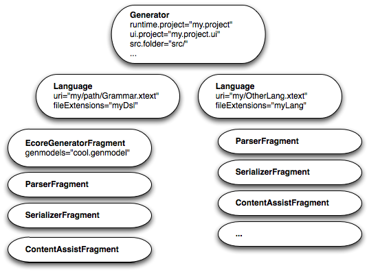

Xtext provides a lot of generic implementations for your language’s infrastructure but also uses code generation to generate some of the components. Those generated components are for instance the parser, the serializer, the inferred Ecore model (if any) and a couple of convenient base classes for content assist, etc.
The generator also contributes to shared project resources such as the plugin.xml, MANIFEST.MF and the Guice modules.
Xtext’s generator uses a special DSL called MWE2 - the modeling workflow engine to configure the generator.
MWE2 allows to compose object graphs declaratively in a very compact manner. The nice thing about it is that it just instantiates Java classes and the configuration is done through public setter and adder methods as one is used to from Java Beans encapsulation principles. An in-depth documentation can be found in the chapter MWE2.
Given the following simple Java class (POJO):
package com.mycompany;
public class Person {
private String name;
public void setName(String name) {
this.name = name;
}
private final List<Person> children = new ArrayList<Person>();
public void addChild(Person child) {
this.children.add(child);
}
}
One can create a family tree with MWE2 easily by describing it in a declarative manner without writing a single line of Java code and without the need to compile classes:
module com.mycompany.CreatePersons
Person {
name = "Grandpa"
child = {
name = "Father"
child = {
name = "Son"
}
}
}
These couple of lines will, when interpreted by MWE2, result in an object tree consisting of three instances of com.mycompany.Person. The interpreter will basically do the same as the following main method:
package com.mycompany;
public class CreatePersons {
public static void main(String[] args) {
Person grandpa = new Person();
grandpa.setName("Grandpa");
Person father = new Person();
father.setName("Father");
grandpa.addChild(father);
Person son = new Person();
son.setName("Son");
father.addChild(son);
}
}
And this is how it works: The root element is a plain Java class name. As the module is a sibling to the class com.mycompany.Person it is not necessary to use use fully qualified name. There are other packages implicitly imported into this workflow as well to make it convenient to instantiate actual workflows and components, but these ones are covered in depth in the appropriate chapter. The constructed objects are furthermore configured according to the declaration in the module, e.g. a second instance of Person will be created and added to the list of children of “Grandpa” while the third person - the class is inferred from the assigned feature - becomes a child of “Father”. All three instances will have their respective name assigned via a reflective invocation of the setName method. If one wants to add another child to “Father”, she can simply repeat the child assignment:
child = com.mycompany.Person {
name = "Father"
child = {
name = "Son"
}
child = {
name = "Daughter"
}
}
As you can see in the example above MWE2 can be used to instantiate arbitrary Java object models without any dependency or limitation to MWE2 specific implementations.
Hint: Whenever you are in an *.mwe2 file and wonder what kind of configuration the underlying component may accept: Just use the Content Assist in the MWE2 Editor or navigate directly to the declaration of the underlying Java implementation by means of F3 (Go To Declaration).
This is the basic idea of the MWE2 language. There are of course a couple of additional concepts and features in the language and we also have not yet talked about the runtime workflow model. Please refer to the dedicated MWE2 reference documentation for additional information. We will now have a look at the component model used to configure the Language Generator.
A language generator is composed of so called language configurations. For each language configuration a URI pointing to its grammar file and the file extensions for the DSL must be provided. In addition, a language is configured with a list of generator fragments. The whole generator is composed of theses fragments. We have fragments for generating parsers, the serializer, the EMF code, the outline view, etc.

The list of grammar fragments forms a chain of responsibility, that is they each get the chance to contribute to the generation of language infrastructure components and are called in the declared order. Each fragment gets the grammar of the language as an EMF model passed in and is able to generate code in one of the configured locations and contribute to several shared artifacts. A generator fragment must implement the interface IGeneratorFragment.
There is usually no need to write your own generator fragments and only rarely you might want to extend an existing one.
As already explained we use MWE2 from EMFT in order to instantiate, configure and execute this structure of components. In the following we see an exemplary language generator configuration written in MWE2 configuration code:
module org.xtext.example.MyDsl
import org.eclipse.emf.mwe.utils.*
import org.eclipse.xtext.generator.*
import org.eclipse.xtext.ui.generator.*
var grammarURI = "classpath:/org/xtext/example/MyDsl.xtext"
var file.extensions = "mydsl"
var projectName = "org.xtext.example.mydsl"
var runtimeProject = "../${projectName}"
Workflow {
bean = StandaloneSetup {
platformUri = "${runtimeProject}/.."
}
component = DirectoryCleaner {
directory = "${runtimeProject}/src-gen"
}
component = DirectoryCleaner {
directory = "${runtimeProject}.ui/src-gen"
}
component = Generator {
pathRtProject = runtimeProject
pathUiProject = "${runtimeProject}.ui"
projectNameRt = projectName
projectNameUi = "${projectName}.ui"
language = {
uri = grammarURI
fileExtensions = file.extensions
// Java API to access grammar elements
fragment = grammarAccess.GrammarAccessFragment {}
/* more fragments to configure the language */
...
}
}
}
Here the root element is Workflow and is part of the very slim runtime model shipped with MWE2. It accepts beans and components. A var declaration is a first class concept of MWE2’s configuration language and defines a variable which can be reset from outside, i.e. when calling the module. It allows to externalize some common configuration parameters. Note that you can refer to the variables using the ${variable-name} notation.
The method Workflow.addBean(Object) does nothing but provides a means to apply global side-effects, which unfortunately is required sometimes. In this example we do a so called EMF stand-alone setup. This class initializes a bunch of things for a non-OSGi environment that are otherwise configured by means of extension points, e.g. it allows to populate EMF’s singletons like the Registry.
Following the bean assignment there are three component elements. The Workflow.addComponent() method accepts instances of IWorkflowComponent, which is the primary concept of MWE2’s workflow model. The language generator component itself is an instance of IWorkflowComponent and can therefore be used within MWE2 workflows.
In the following table the most important standard generator fragments are listed. Please refer to the Javadocs for more detailed documentation. Also have a look at what the Xtext wizard provides and how the workflow configuration in the various example languages look like.
| Class | Generated Artifacts | Related Documentation |
|---|---|---|
| EcoreGeneratorFragment | EMF code for generated models | Model inference |
| XtextAntlrGeneratorFragment | ANTLR grammar, parser, lexer and related services | |
| GrammarAccessFragment | Access to the grammar | |
| ResourceFactoryFragment | EMF resource factory | Xtext Resource |
| ParseTreeConstructorFragment | Model-to-text serialization | Serialization |
| ImportNamespacesScopingFragment | Index-based scoping | Index-based namespace scoping |
| JavaValidatorFragment | Model validation | Model validation |
| FormatterFragment | Code formatter | Code formatter |
| LabelProviderFragment | Label provider | Label provider |
| OutlineTreeProviderFragment | Outline view configuration | Outline |
| JavaBasedContentAssistFragment | Java-based content assist | Content assist |
| XtextAntlrUiGeneratorFragment | Content assist helper based on ANTLR | Content assist |
All Xtext components are assembled by means of Dependency Injection (DI). This means basically that whenever some code is in need for functionality (or state) from another component, one just declares the dependency rather then stating how to resolve it, i.e. obtaining that component.
For instance when some code wants to use a scope provider, it just declares a field (or method or constructor) and adds the Inject annotation:
public class MyLanguageLinker extends Linker {
@Inject
private IScopeProvider scopeProvider;
}
It is not the duty of the client code to care about where the IScopeProvider comes from or how it is created. When above’s class is instantiated, Guice sees that it requires an instance of IScopeProvider and assigns it to the specified field or method parameter. This of course only works, if the object itself is created by Guice. In Xtext almost every instance is created that way and therefore the whole dependency net is controlled and configured by the means of Google Guice.
Guice of course needs to know how to instantiate real objects for declared dependencies. This is done in so called Modules. A Module defines a set of mappings from types to either existing instances, instance providers or concrete classes. Modules are implemented in Java. Here’s an example:
public class MyDslRuntimeModule
extends AbstractMyDslRuntimeModule {
@Override
public void configure(Binder binder) {
super.configure(binder);
binder
.bind(IScopeProvider.class)
.to(MyConcreteScopeProvider.class);
}
}
With plain Guice modules one implements a method called configure and gets a Binder passed in. That binder provides a fluent API to define the mentioned mappings. This was just a very brief and simplified description. We highly recommend to have a look at the Google Guice website to learn more.
Xtext comes with a slightly enhanced module API. For your language you get two different modules: One for the runtime bundle which is used when executing your language infrastructure outside of Eclipse such as on the build server. The other is located in the UI bundle and adds or overrides bindings when Xtext is used within an Eclipse environment.
The enhancement we added to Guice’s Module API is that we provide an abstract base class, which reflectively looks for certain methods in order to find declared bindings. The most common kind of method is :
public Class<? extends IScopeProvider> bindIScopeProvider() {
return MyConcreteScopeProvider.class;
}
which would do the same as the code snippet above. It simply declares a binding from IScopeProvider to MyConcreteScopeProvider. That binding will make Guice instantiate and inject a new instance of MyConcreteScopeProvider whenever a dependency to IScopeProvider is declared.
Having a method per binding allows to deactivate individual bindings by overriding the corresponding methods and either change the binding by returning a different target type or removing that binding completely by returning null.
There are two additional kinds of binding-methods supported. The first one allows to configure a provider. A Provider is an interface with just one method :
public interface Provider<T> {
/**
* Provides an instance of {@code T}. Must never return {@code null}.
*/
T get();
}
This one can be used if you need a hook whenever an instance of a certain type is created. For instance if you want to provide lazy access to a singleton or you need to do some computation each time an instance is created (i.e. factory). If you want to point to a provider rather than to a concrete class you can use the following binding method.
public Class<? extends Provider<IScopeProvider>>
provideIScopeProvider() {
return MyConcreteScopeProviderFactory.class;
}
Note: Please forgive us the overuse of the term provider. The IScopeProvider is not a Guice Provider.
That binding tells Guice to instantiate MyConcreteScopeProviderFactory and invoke get() in order to obtain an instance of IScopeProvider for clients having declared a dependency to that type. Both mentioned methods are allowed to return an instance instead of a type. This may be useful if some global state should be shared in the application:
public Provider<IScopeProvider> provideIScopeProvider() {
return new MyConcreteScopeProviderFactory();
}
or
public IScopeProvider bindIScopeProvider() {
return new MyConcreteScopeProvider();
}
respectively.
The last binding method provided by Xtext allows to do anything you can do with Guice’s binding API, since it allows you to use the Binder directly. If your method’s name starts with the name ‘configure’, has a return type void and accepts one argument of type Binder:
public void configureIScopeProvider(Binder binder) {
binder.bind(IScopeProvider.class).to(MyConcreteScopeProvider.class);
}
In every application wired up with Guice there is usually one point where you initialize an Injector using the modules declared. That injector is used to create the root instance of the whole application. In plain Java environments this is something that’s done in the main method. It could look like this:
public static void main(String[] args) {
Injector injector = Guice.createInjector(
new MyDslRuntimeModule());
MyApplication application = injector.getInstance(
MyApplication.class);
application.run();
}
In Xtext, you should never instantiate the injector of your language yourself. The sections Runtime Setup and Equinox Setup explain how to access it in different scenarios.
These are the basic ideas around Guice and the small extension Xtext provides on top. For more information we strongly encourage you to read through the documentation on the website of Google Guice.
There are two aspects to consider when it comes to continuous integration. Firstly you may want to have a continuous build of your language, that runs all tests and creates an Eclipse update site and other needed artifacts and secondly you may want to have your language and its corresponding code generator integrated in your application builds. We will discuss both cases in the section along a set of example projects, which you can clone, inspect or download from github.com/xtext/maven-xtext-example.
To follow this section you need to have a basic understanding of how Maven works. Please read a tutorial on Maven if you don’t know anything about it.
If you have a look at the example, you’ll find seven different projects of which six are for the various aspects of the language and its build. First we have the language’s runtime project, ui project and test project. In addition we need a feature project, an update site project and a project where we put the parent pom. The seventh project is called example-project and is really a small application project that uses the built language and triggers the code generator through a dedicated maven plug-in. Let’s first have a look at how to build the language.
Although the runtime aspects of an Xtext language is not dependent on Eclipse or its OSGi container, an Xtext language is developed in the form of OSGi bundles. For this kind of builds most people rely on Tycho, which is an OSGi/P2 adapter plug-in for Maven builds. Tycho obtains much information from the OSGi bundle’s manifest. Additionally needed information is configured through the pom.xml file which sits at the root of each project.
All of the projects are aggregated in a parent pom in my.mavenized.herolanguage.releng. Information defined in the parent pom is automatically inherited by the aggregated child projects, so you don’t need to reconfigure the same information over and over again. Here we have configured two additional plug-ins:
The Xtend compiler plug-in will generate the Java source code for any Xtend files during the ‘generate-sources’ phase
<pluginManagement>
<plugins>
<!-- xtend-maven-plugin is in pluginManagement instead of in plugins
so that it doesn't run before the exec-maven-plugin's *.mwe2 gen;
this way we can list it after.
-->
<plugin>
<groupId>org.eclipse.xtend</groupId>
<artifactId>xtend-maven-plugin</artifactId>
<version>${xtext.version}</version>
<executions>
<execution>
<goals>
<goal>compile</goal>
<goal>xtend-install-debug-info</goal>
<goal>testCompile</goal>
<goal>xtend-test-install-debug-info</goal>
</goals>
</execution>
</executions>
<configuration>
<outputDirectory>xtend-gen</outputDirectory>
</configuration>
</plugin>
</plugins>
</pluginManagement>
The Tycho plug-in will pick up and use Eclipse plug-in specific configuration data from the projects in order to build Eclipse conformant OSGi bundles, features and an update site.
<plugins>
<plugin>
<groupId>org.eclipse.tycho</groupId>
<artifactId>tycho-maven-plugin</artifactId>
<version>${tycho-version}</version>
<extensions>true</extensions>
</plugin>
</plugins>
The project my.mavenized.herolanguage.updatesite denotes the updatesite project and only contains a pom.xml and a file called category.xml. The latter includes information about which features are contained in the update site. As you can see, the category.xml file points to the single feature, which is defined in …
This is another project made up on configuration data solely. It contains the feature.xml file which points to the Eclipse plug-ins (bundles) included in this feature.
The pom.xml for the language project contains information about how Maven should run Xtext’s code generator. The first used plug-in cleans the directories containing generated resources during the clean phase:
<plugin>
<groupId>org.apache.maven.plugins</groupId>
<artifactId>maven-clean-plugin</artifactId>
<version>2.5</version>
<configuration>
<filesets>
<fileset>
<directory>${basedir}/src-gen</directory>
</fileset>
<fileset>
<directory>${basedir}/xtend-gen</directory>
</fileset>
<!-- clean ui plugin as well -->
<fileset>
<directory>${basedir}/../${project.artifactId}.ui/src-gen</directory>
</fileset>
<fileset>
<directory>${basedir}/../${project.artifactId}.ui/xtend-gen</directory>
</fileset>
<!-- clean test fragment as well -->
<fileset>
<directory>${basedir}/../${project.artifactId}.tests/src-gen</directory>
</fileset>
<fileset>
<directory>${basedir}/../${project.artifactId}.tests/xtend-gen</directory>
</fileset>
</filesets>
</configuration>
</plugin>
The second plug-in invokes the MWE2 file through a standard Java process:
<plugin>
<groupId>org.codehaus.mojo</groupId>
<artifactId>exec-maven-plugin</artifactId>
<version>1.2.1</version>
<executions>
<execution>
<phase>generate-sources</phase>
<goals>
<goal>java</goal>
</goals>
</execution>
</executions>
<configuration>
<includeProjectDependencies>false</includeProjectDependencies>
<includePluginDependencies>true</includePluginDependencies>
<mainClass>org.eclipse.emf.mwe2.launch.runtime.Mwe2Launcher</mainClass>
<arguments>
<argument>file://${project.basedir}/src/my/mavenized/GenerateHeroLanguage.mwe2</argument>
</arguments>
</configuration>
<dependencies>
<dependency>
<groupId>org.eclipse.xtext</groupId>
<artifactId>org.eclipse.xtext.xtext</artifactId>
<version>2.7.1</version>
</dependency>
<dependency>
<groupId>org.eclipse.xtext</groupId>
<artifactId>org.eclipse.xtext.xbase</artifactId>
<version>2.7.1</version>
</dependency>
</dependencies>
</plugin>
You need to adjust the mwe file as well to be able to run it this way. There are three important adjustments you need to make:
First you need to use a platform:resource URI instead of a classpath URI to point to your Xtext grammar file. This is because we don’t have the source folder on the classpath of the exec plug-in. To do so open the mwe file and change the declaration of the grammarURI to a platform URI similar to how it is done in the example:
// grammarURI has to be platform:/resource as it is not on the classpath
var grammarURI = "platform:/resource/${projectName}/src/my/mavenized/HeroLanguage.xtext"
Next we need to register some URI mappings and make sure we use an XtextResourceSet in the build process. This is only needed if you have ecore file references (also transitively) via platform URI. As we are using Xbase in the example it is needed to resolve the URIs to the Xbase related EPackages.
// use an XtextResourceset throughout the process, which is able to resolve classpath:/ URIs.
resourceSet = org.eclipse.xtext.resource.XtextResourceSet:theResourceSet {}
// add mappings from platform:/resource to classpath:/
uriMap = {
from = "platform:/resource/org.eclipse.xtext.xbase/"
to = "classpath:/"
}
uriMap = {
from = "platform:/resource/org.eclipse.xtext.common.types/"
to = "classpath:/"
}
Finally we need to tell the generator to use the created XtextResourceSet by adding this line :
....
language = auto-inject {
// make sure we use the resourceSet created during standalone setup.
forcedResourceSet = theResourceSet
...
Now that we can build our language we need to be able to integrate our language compiler in the integration build of application projects. For that a dedicated maven-plugin is available in Maven central. We now refer to the project example-project which is a standard Java-project that shouldn’t contain any Eclipse plug-in specific information nor should it be built with Tycho. Let’s have a look at the pom.xml and therein the Xtext plug-in.
<plugin>
<groupId>org.eclipse.xtext</groupId>
<artifactId>xtext-maven-plugin</artifactId>
<version>2.7.1</version>
<executions>
<execution>
<goals>
<goal>generate</goal>
</goals>
</execution>
</executions>
<configuration>
<languages>
<!-- Add additional standalone setups if you have more than one language -->
<language>
<setup>my.mavenized.HeroLanguageStandaloneSetup</setup>
<outputConfigurations>
<outputConfiguration>
<outputDirectory>src/main/generated-sources/xtend/</outputDirectory>
</outputConfiguration>
</outputConfigurations>
</language>
</languages>
</configuration>
<dependencies>
<!-- add a dependency to the language core bundle, this will only be needed during geneeration and will not pollute your project's classpath. -->
<dependency>
<groupId>my.mavenized.herolanguage</groupId>
<artifactId>my.mavenized.herolanguage</artifactId>
<version>1.0.0-SNAPSHOT</version>
</dependency>
</dependencies>
</plugin>
As the comments suggest, you may add multiple languages in the languages section. A language will use the default outputConfiguration, but you can override the different properties just as you can do within Eclipse preferences.